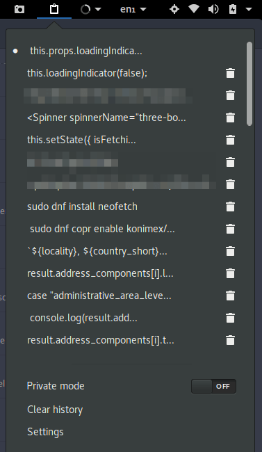

This article was first published in the year 2012 and was updated in 2017.
The GNOME desktop environment is loved by many, but it allows for very little out-of-the-box customisation. However, you can extend the features of the desktop by installing third-party extensions which help to fix any weird quirks you might have observed or change the behaviour of your desktop outright.
Here are some of the most useful extensions that will greatly improve the usability and customisability of GNOME Shell. This is far from an exhaustive list, so feel free to tell us about your favourite extensions in the comments section.
1. Dash to Panel

For those who want a traditional desktop paradigm in GNOME Shell, this extension is a must-have. It combines the top bar and the dash into a single panel, similar to what you have in KDE Plasma and Cinnamon, and allows you to customise its position (top or bottom), size, behaviour and appearance.
2. GNOME Pomodoro

The pomodoro technique is one of the most popular time management hacks used today. It aims to improve your productivity by helping you work in short sprints with regular breaks. All you need to get started is a timer, and this extension brings exactly that to your GNOME desktop.
It allows you to customize the amount of time spent working and the length of your break periods. It also allows you to block all notifications during a work sprint and offers quick keyboard shortcuts to quickly start or stop the timer.
3. Clipboard Indicator

Clipboard Indicator brings a simple clipboard management system to your desktop. It’s not as comprehensive as some of the available clipboard managers for Linux we have covered in the past, but it works well enough and provides keyboard shortcuts for quickly selecting items from your clipboard history.
4. Touchpad indicator

Touchpad Indicator allows you to disable your trackpad, touchscreen (if you have one) or a pen device from the top bar. This is useful when you have a mouse plugged in and do not want other pointing devices to be active.
5. Redshift GNOME Extension

Research has shown that the blue light emitted by many electronic devices has a harmful effect on our sleep cycles. A way to neutralise this effect is by installing the Redshift utility which changes the temperature of your screen to match that of your surroundings. Redshift is available as a standalone app, but that only works in an X11 session at this time. The GNOME extension works on both X11 and Wayland.
6. Do Not Disturb Button

This handy extension allows you to block all incoming notifications when you want to focus on a particular activity.
7. Shelltile

By default, GNOME Shell can tile your windows to the right or left of your screen. If you want more than that, you should get this extension. It groups your windows and tiles them in the layout of your choice.
8. TopIcons Plus

If you do not like the way GNOME handles tray icons by default, by tucking them away in the bottom-left of your screen, you can change that behaviour by installing this extension. It allows you to move the tray icons to the top bar and customise the position and appearance of the icons.
9. Open Weather

Open Weather is a very useful and convenient tool for viewing the weather information of any location. It is accessible from the top bar and displays forecast information for the current day as well as the next two days by default. You can save as many cities as you want and change the number of days you’d like to see in the forecast section (up to ten days).
10. Sound Input & Output Device Chooser

If you ever find yourself switching between a number of audio sources, this extension is a handy one to have. It lists all attached devices and allows you to switch between them conveniently from the settings drop-down menu without having to dive into the sound preferences.
If we missed out on your favourite Gnome Shell extension, tell us about it in the comments.

Leave a Reply Cancel reply